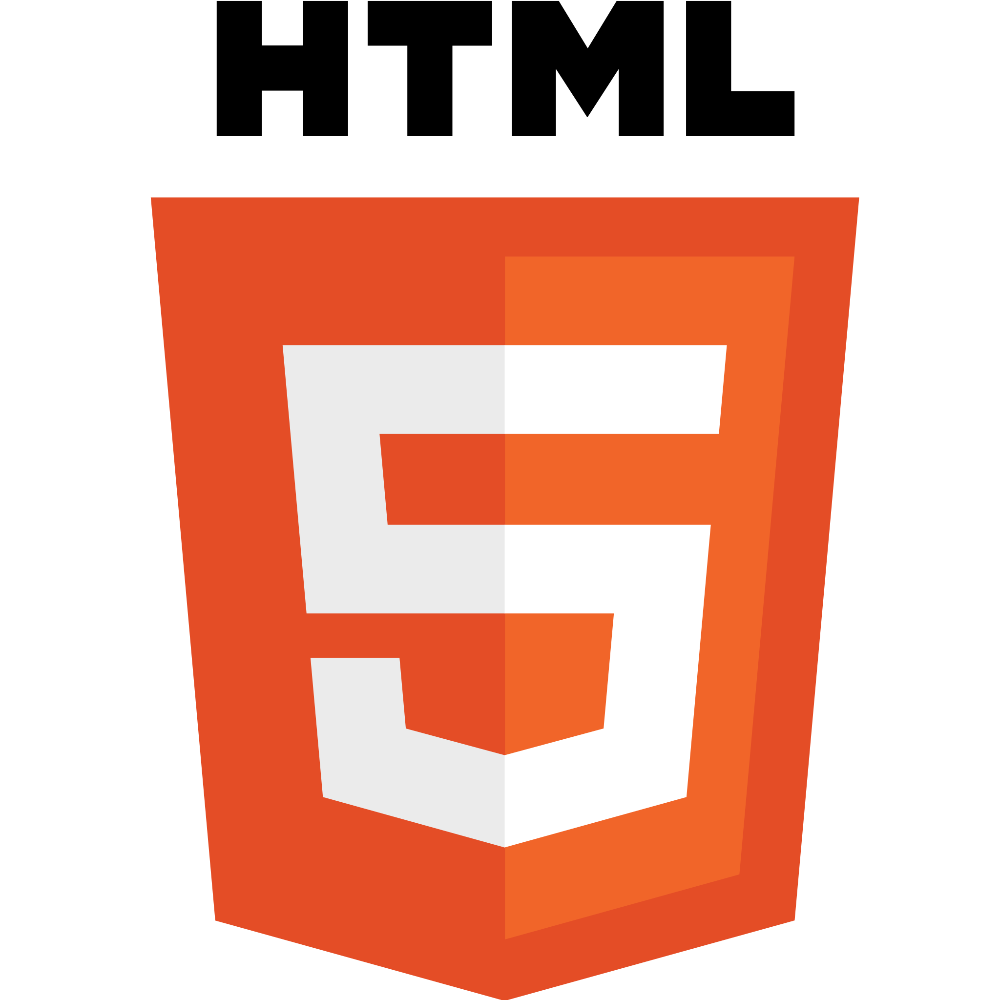
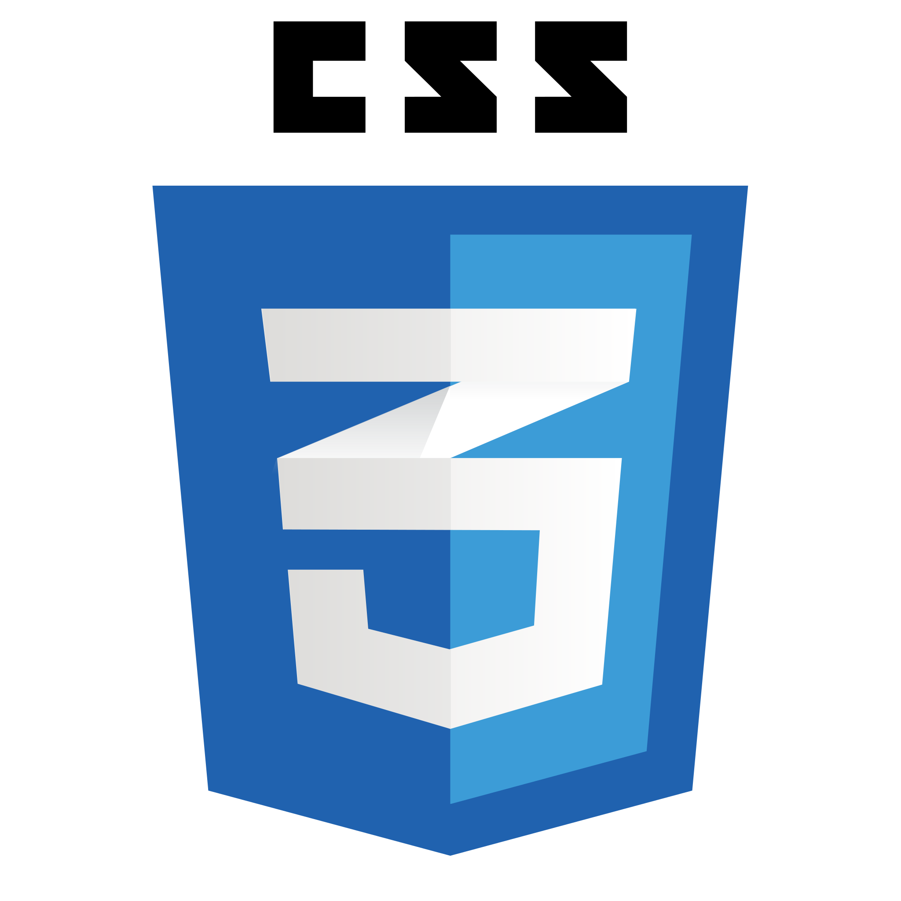
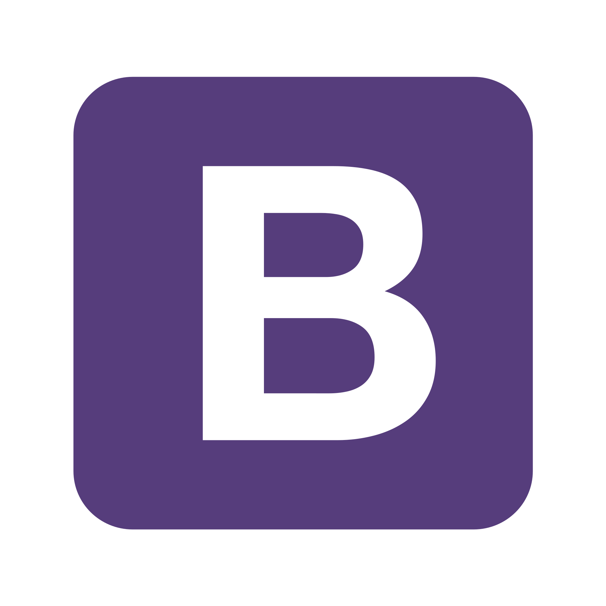
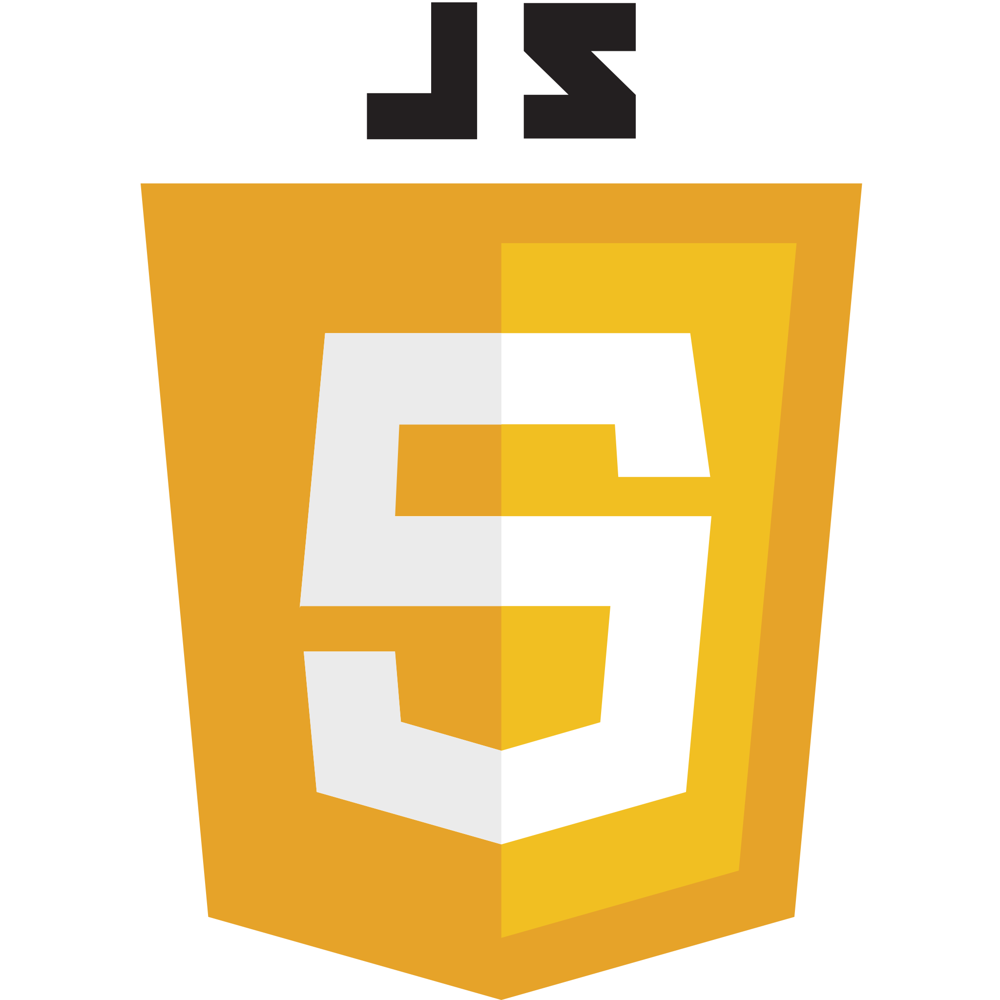
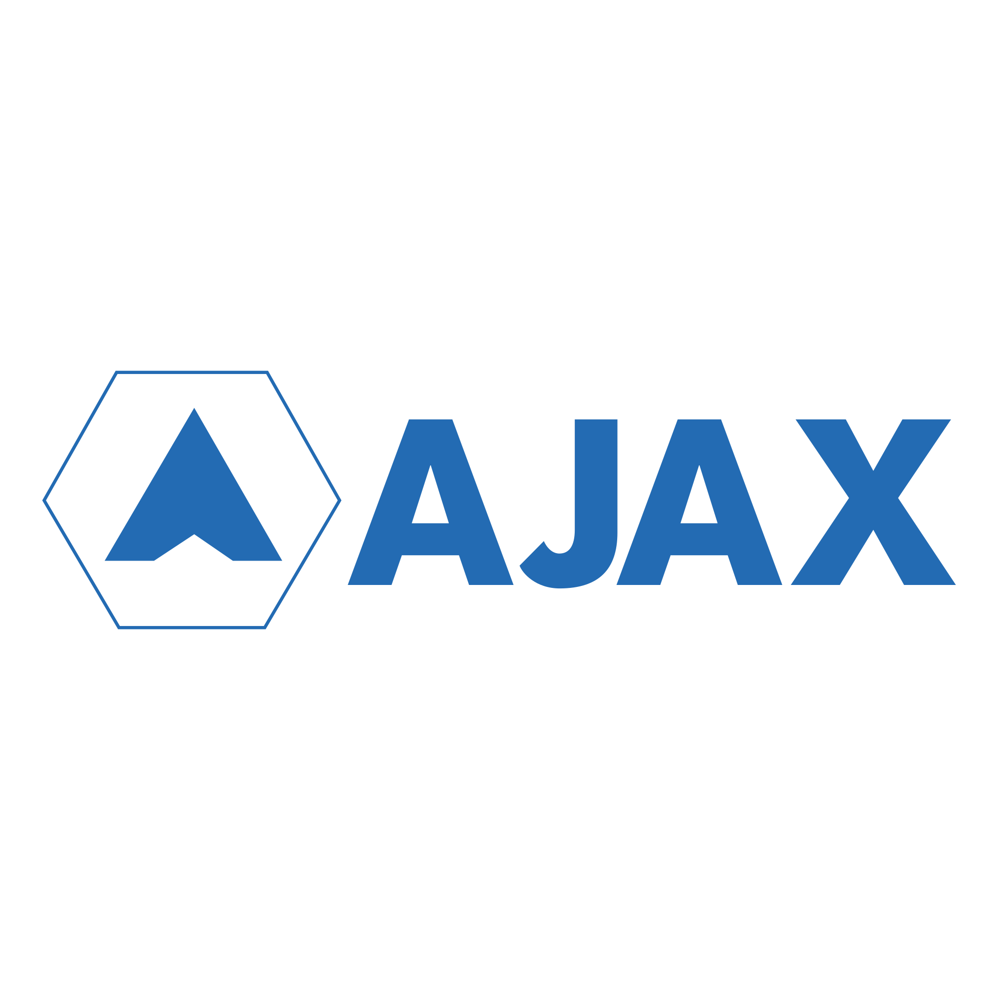
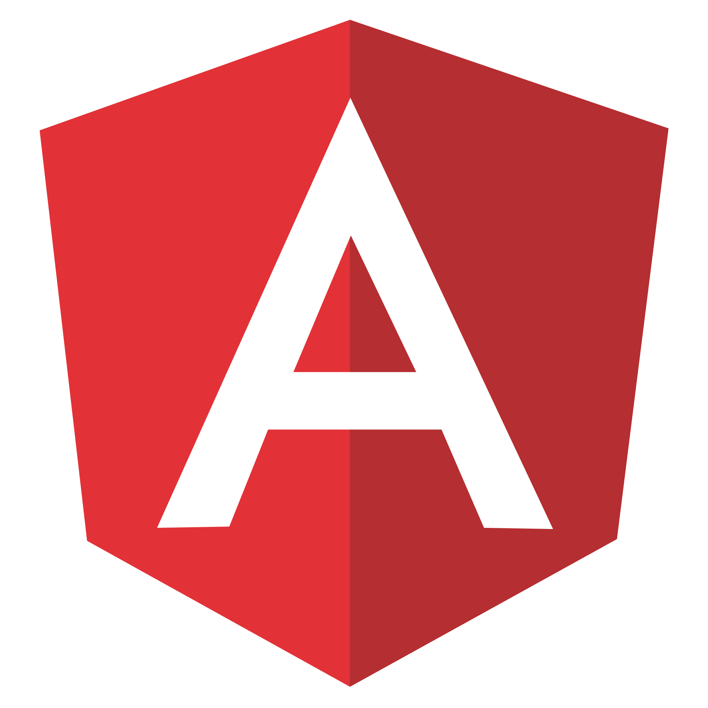
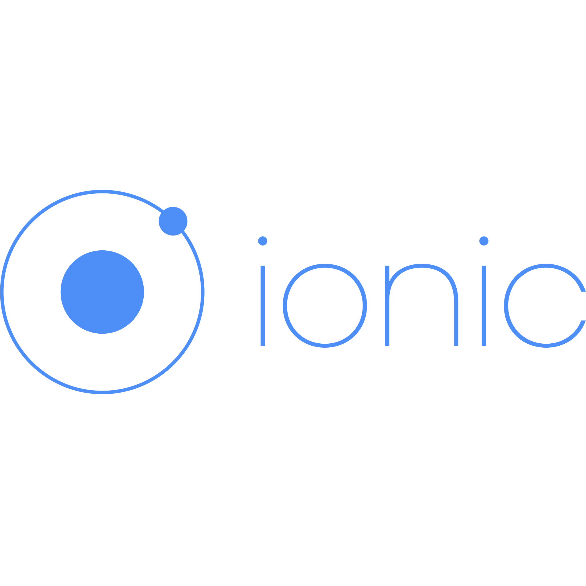
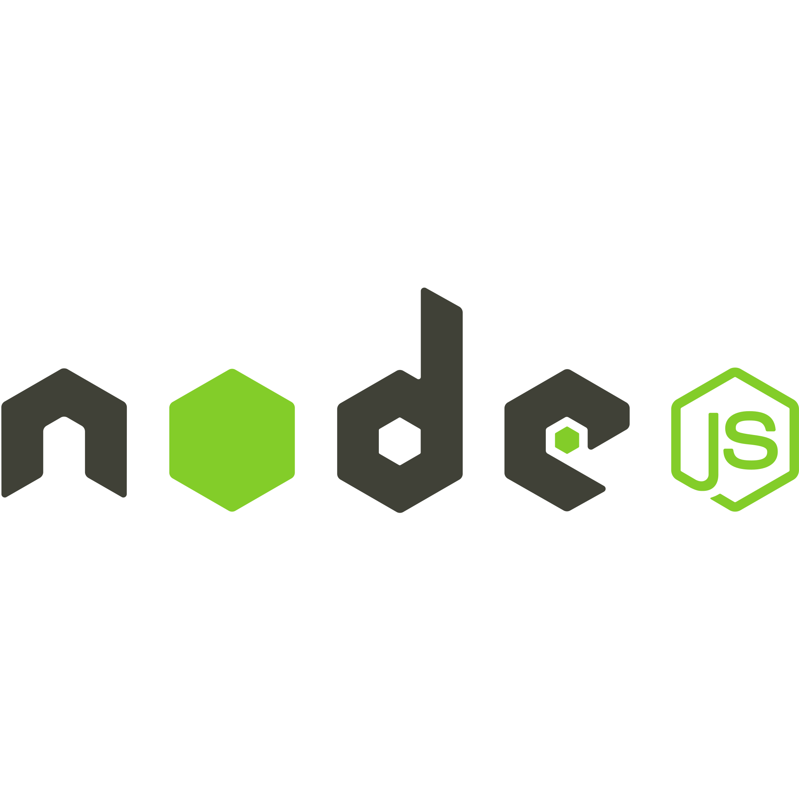
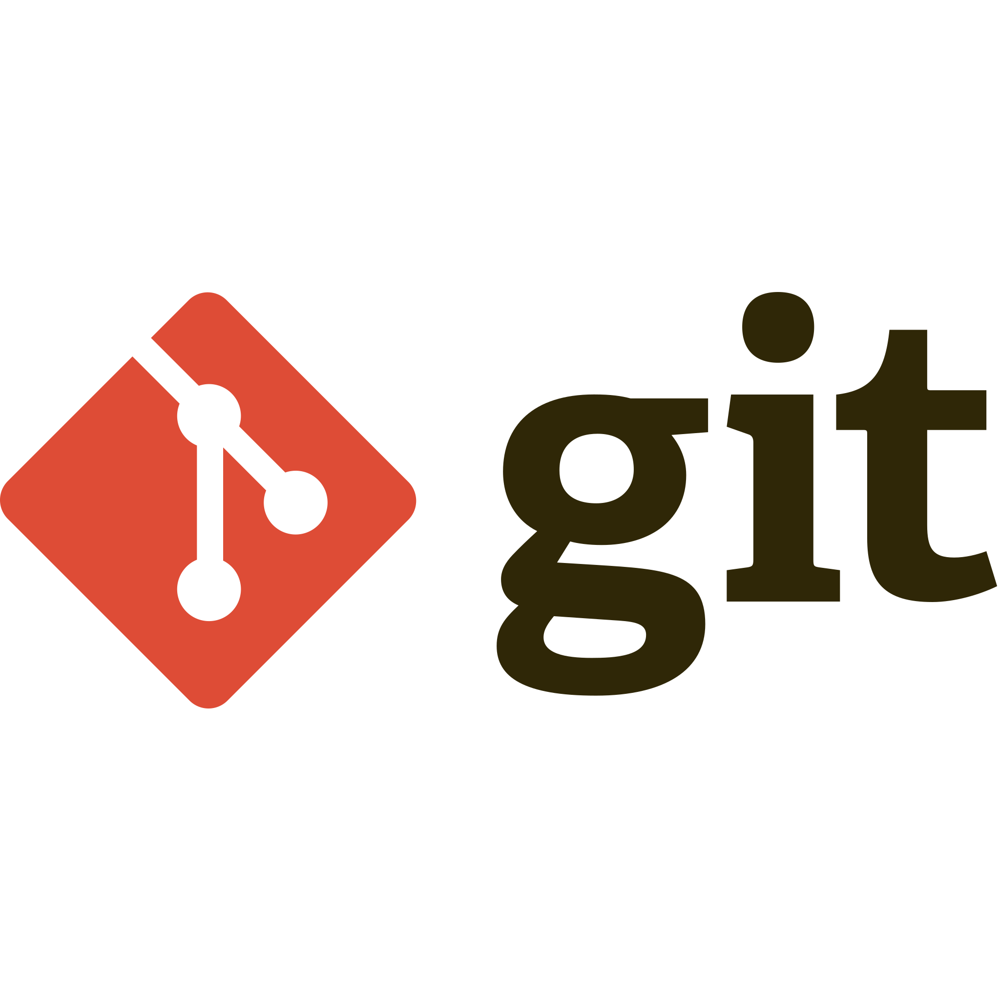
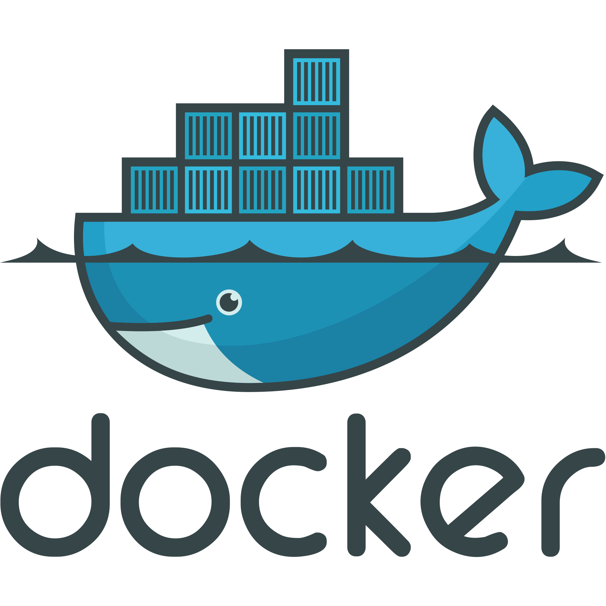

THOMAS Mathieu
{ Développeur : [ Fullstack] }
Introduction
Bienvenu sur mon CV! Débarqué dans le monde du Web en Décembre 2018, j'y ai trouvé ma voie. Je travail tous les jours afin d'approfondir mes connaissances et la maitrise des outils à notre disposition. Déterminé, flexible et jovial, vous serez ravis de m'avoir dans vos effectifs. J'ai tendance à favoriser la bonne ambiance de travail et la dynamique de groupe. Bonne lecture et n'hésitez pas à me contacter via mon profil linkedin pour plus d'informations!

-

-

-

-

-

-
-

-

-
-

-
-

-

-

-
En détail?
EN FORMATION WEB DEVELOPPEUR :
C'est mon arrivée dans l'univers du code. La découverte des bases avec le Html5/Css3,
Linux et son shell,
des normes W3C, du responsive design et de l'UXUI. De l'algorythmie associée à l'apprentissage des langages Php,
Javascript, ainsi que des travaux de
modélisation de bases de données et la gestion de données avec mySQL/phpMyAdmin.
Une approche superficielle des Frameworks Symfony et Angular faite en fin de formation.
Cependant j'ai pu travailler sur un gros projet Angular/Symfony sur ma période de stage ce qui m'a
demander pas mal d'efforts d'autoformation. Mais cela m'a permis de mettre en oeuvre ce que j'avais
appris de
la gestion de projet, en partant de zéro, passant par le cahier des charges, le maquettage et la conception de base de données.
J'ai aussi abordé d'autres notions comme l'AGILE, la cybersécurité (ANSSI), le référencement SEO.
EN FORMATION DEVELOPPEUR JAVASCRIPT AVANCE:
2020, l'année qui confirme mon choix de reconversion professionnelle. L'aspect permissif, dynamique,
polyvalent de Javascript est ce qui fait son charme et permet aussi de comprendre certaines notions plus exotiques.
Cours intensif de JSvanilla pour commencer, full POO si possible, avec un passage par du MVC et TypeScript. Le versionning avec Git, Docker.
On enchaine sur la gestion de base de données noSQL avec mongoDB et des APIs NodeJS, pour passer à
l'abordage
des Frameworks Angular, Ionic, React.
Un projet fil rouge pour mélanger tout ça... en AGILE!
AUJOURD'HUI:
En activité depuis le 4 Janvier 2021 dans une entreprise Bordelaise, je consolide mes connaissances, surtout autour du back-end et du langage Php.
J'ai eu l'occasion de développer toute la logique métier d'une application de concours de pêche en partant seulement du règlement du jeu,
construire l'administration relative avec un interface en TWIG + BOOTSTRAP les délais étant courts.
Mettre en place le système de "secure code" dans le process banquier de l'entreprise, passant par le refactoring.
Exploiter une API dans le cadre d'un partenariat remunéré via redirection vers un site tiers.
Pourtant, ne trouvant pas l'environnement technique qui me convient ici, et s'agissant d'une première expérience,
j'ai décidé de rechercher une nouvelle expérience pour parfaire mon savoir.
J'ai bien conscience de ne pas avoir encore toute la productivité d'un développeur accompli, mais j'y tend et je dois seulement continuer de m'investir.
Seulement j'aspire à trouver ce qui ce fait rare, une entreprise consciente de la valeur d'un collaborateur impliqué
et qui sait que cela nécéssite une certaine considération. En attendant, je me remets à développer sur Symfony, un Frameworks qu'il me semble nécessaire de connaitre aujoud'hui.
Afin de m'épanouir pleinement dans cette profession, qui devient une passion, je recherche donc maintenant l'entreprise avec laquelle je pourrais progresser
vers une qualité de développement, pour gagner ensemble une vraie productivité.
EXPERIENCES PROFESSIONNELLES WEB
- Décembre 2018 - Octobre 2019 : Formation développeur Web et Web mobile
- Août 2018 - Septembre 2018 : Conception et développement d'un progiciel de suivi d'étudiants en post formation dans un environnement Angular/Symfony
- Juin 2020 - Novembre 2020 : Formation de développeur Javascript avancé
- Janvier 2021 - Juillet 2021 : Développeur fullstack chez FishingTheSpot
- Vous pourrez trouver des aperçus de mon code sur GitHub
DIPLOMES
- Juin 2020 - Novembre 2020: Certification de développeur Javascript avancé
- 2019 : Titre de développeur Web/Web mobile
- 2010 : Brevet Professionnel de préparateur en pharmacie
- 2006 : Baccalauréat série Sciences et Techniques de Laboratoire
- 2005 : Attestation de formation aux premiers secours
- 2002 : Brevet des collèges (et Brevet informatique)
ATOUTS
- Autonome
- Curieux
- Flexible
- Observateur
- Persévérant
CENTRES D’INTERETS
- Informatique
- Internet
- Guitare (FingerstylePicking/composition)
- Musique (Metal, EDM)
- Nouvelles technologies
- Jeux vidéos
- Cinéma
- Cuisine